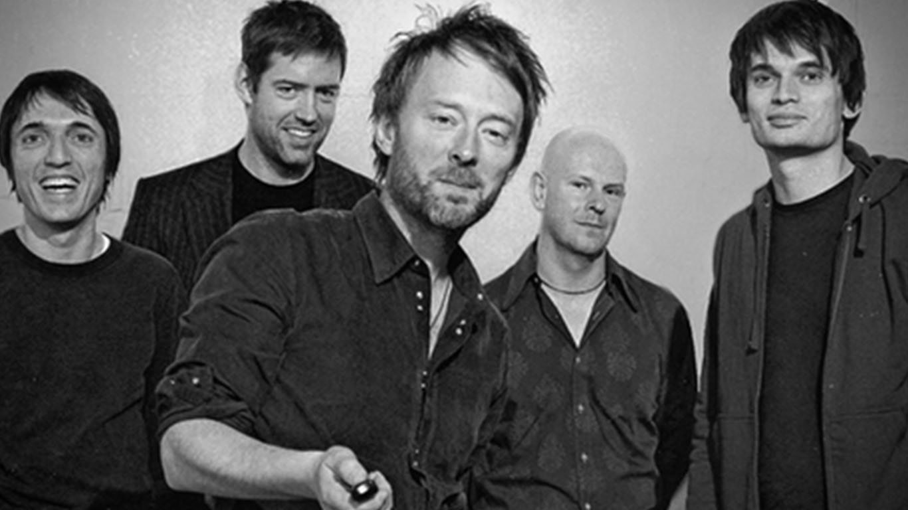
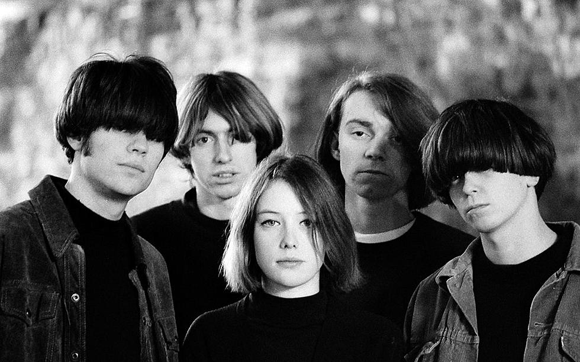
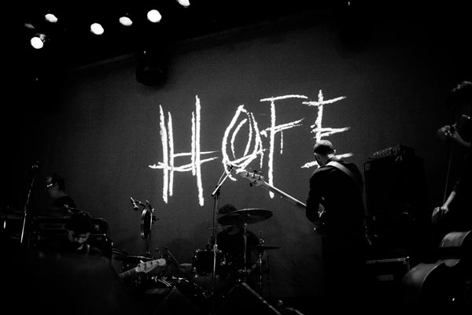

Nếu có người nào đó bất chợt đi ngang nơi tôi làm việc, hình ảnh mà họ sẽ luôn nhìn thấy là một cậu thanh niên, đầu liên tục gật gù theo thứ âm thanh phát ra từ tai nghe. Trong khoảnh khắc đó, cả thế giới chỉ còn mình cậu, không suy nghĩ, không kiểm soát, ý tưởng cứ thế tuôn trào qua đầu ngón tay, và xuất hiện trên màn hình laptop.
Tôi từng đọc được ở đâu đó rằng playlist của bạn nói lên rất nhiều về con người bạn. Thực ra nếu câu đó mà đúng thì chắc tôi sẽ sớm bị hội người khùng đa nhân cách bế lên xe và bắt về trại mất, bởi lẽ thể loại nhạc tui nghe rất đa dạng và còn có phần trái ngược nhau.
Phần lớn những gì tôi nghe trong ngày luôn luôn có sự xuất hiện của Radiohead. Có những buổi sáng tôi bắt đầu một ngày làm việc với Airbag, Just hay Planet Telex. Tui thích cái sự dồn dập, mập mờ phát ra từ tiếng guitar riff trong những bài đó. Chúng như một chất kích thích hoàn hảo để đánh thức tôi cho một ngày mới sau một đêm trằn trọc không ngủ vì hôm trước lỡ trả lời “you too” khi người phục vụ nói với tôi “enjoy your meal”

Radiohead
Tuy vậy, lần đầu tôi phải lòng với Radiohead không phải là vì cái năng lượng mà họ mang lại, mà là cái sự mãnh liệt của cảm xúc mà họ đưa vào tai người nghe. Từng có một khoảng thời gian, giữa những buổi đêm muộn, tôi lại mơ về những mối tình đã không có cơ hội được tồn tại, những lần sự tự ti khiến tôi bỏ qua cơ hội để yêu và được yêu. Tôi tỉnh dậy giữa đêm với những mảnh ký ức nhạt mờ về những giấc mơ không đầu không cuối đó và lặng lẽ lắng nghe Creep qua chiếc tai nghe cũ sờn. Sự im lặng của căn phòng tối, tiếng guitar “tạch tạch” khàn đục trước khi vào điệp khúc của Jonny Greenwood, tiếng gào thét u uất, đau buồn của Thom Yorke, tất cả hòa quyện cùng nhau, và đẩy mọi cảm xúc của tôi quá giới hạn. Cứ như thế, tôi như trở lại vào khoảng khắc ngày đó, trở lại thành đứa nhóc nhút nhát, khờ dại đó. Tôi lặng thinh nép mình sau bức tường cũ của trường, đứng nhìn luồng gió mát rượi của buổi chiều mua thu luồn lách qua từng sợi tóc của cô bạn cùng lớp và cảm nhận những giọt nước mắt từ từ lăn trên má. Bài nhạc kết thúc với tiếng tôi sụt sịt giữa màn đêm tĩnh lặng, và Thom Yorke chậm rãi hát lên nhưng câu cuối cùng:
Whatever makes you happy
Whatever you want
You’re so fuckin’ special
I wish I was special
But I’m a creep
I’m a weirdo
What the hell am I doin’ here?
I don’t belong here
I don’t belong here
Well, tất nhiên Radiohead không chỉ có Creep. The Bend (1995), OK Computer (1997), Kid A (2000), Hail to the Thief (2003) hay album mới nhất…cách đây 5 năm - A Moon Shaped Pool (2016) là những album mà tôi có thể nghe đi nghe lại quanh năm suốt tháng, lúc làm việc, viết lách, lướt web hay chỉ đơn giản là khi tôi muốn nhắm mắt và để âm nhạc quyết định những cử chỉ, hành động kế tiếp của mình….cảm thấy tò mò á? ừ thì lúc đó tui trông như thế này
Có lẽ vì là một fan cứng nên đôi lúc tôi không thể vừa làm việc vừa nghe nhạc của Radiohead được. Vì cứ mỗi 30s tôi sẽ bỏ hết công chuyện mà quay ra gào rú hát theo Thế nên mỗi khi làm việc cần tập trung, tôi lại chuyển sang nghe post-rock hoặc shoegaze. Just for a Day (1991) và Souvlaki (1993) của band Slowdive là 2 album mà tôi hay nghe trong lúc thư giãn hay làm việc. Chúng giúp mọi thứ trong đầu tôi tuôn chảy mượt mà hơn, và giảm thiểu tối đa sự ảnh hưởng của cảm xúc lên suy nghĩ.

Slowdive
Nói như thế không phải vì shoegaze hay post-rock không thể truyền tải được cảm xúc gì, ngược lại là đằng khác. Minh chứng là mỗi khi cần cảm hứng viết, điều mà (với tôi) được dẫn đắt chủ yếu bởi cảm xúc, tôi lại chuyển sang nghe band post-rock mà mình yêu thích nhất-Godspeed You! Black Emperor (hay GYBE). F♯A♯∞ (1997), Lift Your Skinny Fists Like Antennas to Heaven (2000) và Yanqui U.X.O. (2002) là 3 album đã khiến tôi đau đầu nhiều nhất. Chúng mang lại một nguồn cảm hứng bất tận vượt khỏi khả năng viết của tôi. Tôi thường nằm nghe âm nhạc của GYBE với sự bức bối thét gào trong lòng bởi chúng liên tục thôi thúc tôi phải viết ra những thứ mà tôi cảm nhận được, nhưng tôi lại chẳng tài nào có thể biểu đạt rõ nhất những điều ấy bằng những câu chữ và vốn từ vựng nghèo nàn của mình.
Âm nhạc của GYBE đặt biệt tới nỗi vào cái lần đầu tiên tôi nghe xong The Dead Flag Blues trong album F♯A♯∞ (1997), tôi bất giác ngồi yên một lúc lâu, đắm chìm vào không gian im lặng của căn phòng tối om và nghĩ rằng, tôi sẽ chẳng bao giờ giống như trước đây được nữa. Tôi như đã lặn xuống đáy cùng của sự tuyệt vọng và tìm thấy hi vọng ở đầu bên kia.

Godspeed You! Black Emperor
Thế ngày nào tôi cũng nghe ba cái nhạc depressing thế này á? No no, ngược lại là đằng khác. Tất nhiên Radiohead là không thể thiếu trong một ngày của tôi, nhưng những gì còn lại trong ngày sẽ tùy thuộc mood của hôm đó. Thường thì sẽ là dream pop, shoegaze, bé Xuân Mai, indie rock, rap, punk hay bedroom pop Khi ở nhà tôi sẽ dành thời gian nghe nhạc để đi khám phá những artists mới nên không biệt nhiều về thể loại. Cũng nhờ thế mà năm nay tôi lại tìm được thêm quá nhiều artists hợp gu như Softcult, Sharon Van Etten, Destroy Boys, Electric Youth, etc.
Còn khi ở công ty, tôi thích cái cảm giác gõ code và gật gù theo những giai điệu mượt mà của Mac DeMarco, những âm thanh gelato rock của Alvvays, cái flow dị hợm 18 kí OG của Cam, hay lắng nghe những vòng lặp lôi cuốn của TV Girl và hoài niệm về một thập kỉ tôi chưa từng sống, về những khoảnh khắc tôi chưa từng có, với một cô gái tôi chưa từng yêu.
Tất nhiên là còn nhiều artists khác mà tôi yêu thích nhưng chả thể nào có thể kể ra hết. Ví dụ gần đây tôi nghiện album The New Abnormal (2020) của The Strokes sau khi nghe The Adults Are Talking hay album Closing Time (1973) của bác Tom Waits sau khi vô tình click nhầm vào bài I Hope That I Don’t Fall in Love with You. Hoặc cứ vài tuần trôi qua, tôi lại quay lại nghe Future Islands - A Dream Of You And Me, The Love Language - Lalita, Crystal Castles - Not In Love, M83 - Intro và còn nhiều nhiều artists khác mà tôi đang giấu nữa
Dạo này tôi hay nghe GYBE nên có nhiều năng lượng viết bị dồn nén. Lâu ngày nó trở thành mấy bài viết nhăng viết cuội thế này. Tất nhiên tôi cũng muốn viết những bài “có ích” hơn chút, nhưng đơn giản là…méo có hứng. Thôi thì tạm thời viết đại vài dòng cho thoái mái tinh thần roài tính tiếp Feel free to DM me your music taste if you wanna share cus I’m too lazy to make a comment section
Till next time